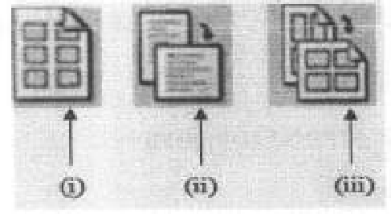
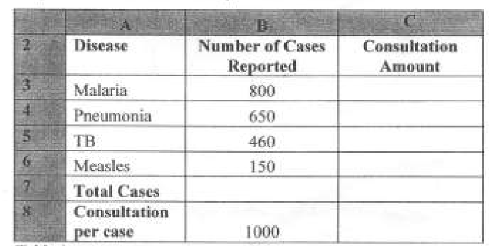

COMPUTER APPLICATIONS I (THEORY)
Exam Code: 2920/102A
Duration: 2 hours
Period: July 2019
Explain each of the following terms as used in desktop publishing: (i) autoflow; (ii) kerning. Autoflow: Autoflow is a desktop publishing feature that automatically flows text from one text frame to the next available frame in a document. This is useful when text exceeds the capacity of a single frame, allowing continuous text flow across multiple pages or columns without manual intervention. Kerning: Kerning refers to the adjustment of spacing between pairs of characters to improve readability and visual appeal. It reduces or increases the space between specific character pairs that appear too close or too far apart, creating a more balanced and harmonious text appearance. Describe each of the following word processing features: (i) insertion-point; (ii) end-of-document marker. Insertion-point: The insertion-point, often represented by a blinking vertical cursor, indicates the current location where text will be inserted when typing. It is positioned within the document and moves as text is entered or deleted, showing the user the active point of text manipulation. End-of-document marker: The end-of-document marker is a visual indicator in a word processing document that signifies the absolute end of the document content. It is typically a short horizontal line or symbol located after the last line of text, preventing further text entry beyond this point and clearly marking the document's termination. Acacia College intends to connect all its computers to the Internet. Outline four hardware requirements to accomplish this task. The hardware requirements for Acacia College to connect its computers to the internet are: Networking Devices: A router and/or switches are needed to distribute the internet connection to multiple computers within the college network. The router acts as a gateway to the internet, while switches facilitate communication within the local network. Modem: A modem is necessary to interface with the Internet Service Provider's (ISP) network. The type of modem (e.g., DSL, cable, fiber) depends on the type of internet service subscribed to. Network Interface Cards (NICs): Each computer needs a NIC to connect to the network. Modern computers usually have built-in Ethernet NICs, and Wi-Fi NICs can be used for wireless connectivity. Cabling (for wired connections): Ethernet cables (e.g., Cat5e, Cat6) are required to physically connect computers to the network switches or router if a wired network is preferred or needed in certain areas. Alternatively, for wireless, a Wireless Access Point (WAP) may be needed in addition to the router. Figure 1 is a section of a master page set up options in a presentation program. Use it to answer the question that follows.  Explain each of the set up options labelled (i), (ii) and (iii). Assuming Figure 1 options (i), (ii), and (iii) refer to common master slide layout options: (i) Title Slide Layout: This option sets the master slide to function as a title slide. It typically includes placeholders for a main title and a subtitle, often with distinct formatting and positioning suitable for the opening slide of a presentation. (ii) Title and Content Layout: This is a standard layout that includes a title placeholder at the top and a larger content area below. The content area can accommodate various elements such as text, images, charts, or SmartArt, making it versatile for general presentation slides. (iii) Section Header Layout: This layout is designed for creating slides that introduce new sections within the presentation. It usually features a prominent section title placeholder and optionally a brief introductory text area, helping to organize and divide the presentation content logically. Explain three transition effects that could be applied to a slide during animation of objects in a presentation program. Transition effects are visual effects that occur when moving from one slide to the next in a presentation. Three transition effects are: Fade: A fade transition gradually changes the slide's visibility from transparent to opaque (fade in) or from opaque to transparent (fade out). It provides a smooth and subtle transition between slides. Push: A push transition makes the new slide appear to push the previous slide off the screen. The direction of the push can be customized (e.g., push from right, push from top), creating a directional movement effect. Wipe: A wipe transition reveals the new slide by wiping across the previous slide in a chosen direction (e.g., wipe from left, wipe from bottom). This effect gives the impression of the new slide progressively covering the old one. Distinguish between multi-user and single user operating systems as used in computing. Single-user Operating System: A single-user operating system is designed to manage the resources of a computer so that only one user can access and utilize the system at a time. Examples include early versions of Windows (like Windows 98) and macOS (like Classic Mac OS). These systems focus on individual productivity and do not incorporate features for user account management or concurrent access. Multi-user Operating System: A multi-user operating system allows multiple users to access and utilize the computer system's resources simultaneously. This is achieved through features like user accounts, permissions, and resource management, which ensure that each user has a separate and secure working environment. Examples include modern Windows Server editions, Linux, and Unix. These systems are designed for environments where multiple individuals need to share computing resources, such as in servers, mainframes, and networked workstations. Key Differences: The primary distinction lies in the number of users that can concurrently interact with the system. Single-user systems are for individual use, lacking robust security and user management for multiple accounts. Multi-user systems are built for shared access, featuring advanced security, user authentication, and resource allocation to support simultaneous users without interference. Bidhaa Company has created a database file to store details of it's employees. The database contains the following details for each employee; Name, DOB, IDNo, Passport photo, Gender and residential area. (i) State an appropriate data type for each field; The appropriate data types for each field are: Name: Text/String - To store names, which are alphanumeric characters. DOB (Date of Birth): Date - To store dates in a structured date format. IDNo (Identification Number): Text/String or Number (depending on format) - If IDNo is purely numeric, Number type can be used, otherwise Text/String to accommodate alphanumeric IDs or leading zeros. Passport photo: Attachment/BLOB (Binary Large Object) - To store image files. Gender: Text/String (limited to specific values like "Male", "Female", "Other") or Lookup/Enumerated type. Residential area: Text/String - To store address information. Write an expression that would be used to calculate the current age of an employee displayed in years only; Assuming 'DOB' is the field name for Date of Birth and today's date is used for calculation, a possible expression is: This expression calculates the difference in years between the current year and the year of birth. More accurate age calculation may involve considering month and day for precise age, but this provides age in full years. Write an expression that would be used to extract employees whose age is between 22 and 50 years. Using the age calculation from (ii) and assuming the calculated age is in a field or can be calculated inline, an expression to filter employees aged between 22 and 50 is: This SQL-like WHERE clause filters records where the calculated age is greater than or equal to 22 AND less than or equal to 50. Syntax might vary depending on the specific database system. Define each of the following terms as used in databases: (i) cardinality; (ii) referential integrity. Cardinality: In database relationships, cardinality refers to the numerical relationship between instances of one entity and instances of another entity. It specifies the maximum number of instances of one entity that can be related to instances of another entity, and vice versa. Common cardinality types include one-to-one, one-to-many, and many-to-many, defining constraints and rules for data relationships. Referential Integrity: Referential integrity is a database constraint that ensures relationships between tables remain consistent. It mandates that foreign keys in one table must correctly reference primary keys in another table. Specifically, it ensures that if a foreign key value exists, it must match a valid primary key value in the related table. This prevents orphaned records and maintains data accuracy and relationship validity across the database. The operating system provides a standard interface between a computer user and the computer system for communication. Describe two types of such interfaces. The operating system provides interfaces for users to interact with the computer. Two main types are: Command Line Interface (CLI): A CLI is a text-based interface where users interact with the operating system by typing commands. Commands are entered as text and executed by the system, with responses also displayed as text. CLIs offer precise control and automation capabilities, often preferred by advanced users and system administrators for tasks like scripting and system management. Examples include Terminal in macOS/Linux and Command Prompt in Windows. Graphical User Interface (GUI): A GUI uses visual elements like windows, icons, menus, and pointers (WIMP) to facilitate user interaction. Users interact by manipulating these graphical elements using input devices like a mouse and keyboard. GUIs are designed to be user-friendly and intuitive, making computers accessible to users with varying levels of technical expertise. Examples include Windows desktop environment, macOS Finder, and GNOME/KDE in Linux. Jonah used fill and mask commands while designing a publication using a DTP application. Explain each of these commands. Fill Command: In DTP applications, the fill command is used to apply color, patterns, or gradients to the interior of objects or shapes. It allows designers to define the visual appearance of enclosed areas, such as text boxes, shapes, or graphics, by selecting from a palette of colors or creating custom fills. Fill enhances visual appeal and helps differentiate elements within a publication. Mask Command: The mask command (or masking) is a technique used to selectively hide or reveal portions of an image or object in DTP. A mask acts like a stencil, defining which parts of an element are visible and which are concealed. This is useful for non-destructively editing images, compositing elements, or creating complex visual effects by controlling the transparency or visibility of specific areas. Rose used a presentation program to display her progress on a project she carried out. Outline three ways in which she could have started the slide show. Rose could start her slide show in presentation programs in several ways: From the Beginning: This option starts the presentation from the very first slide. Typically, this can be initiated by pressing the F5 key or selecting "Start from Beginning" from the Slide Show menu. It is used when presenting the entire sequence of slides. From Current Slide: This option starts the presentation from the slide that is currently selected in the editing view. It is useful for previewing a specific slide or for resuming a presentation from a particular point. This is often activated by Shift+F5 or selecting "Start from Current Slide." Custom Slide Show: Some presentation programs allow creating custom slide shows, which are subsets of slides from the main presentation. Starting a custom slide show allows presenting only a selected group of slides, useful for tailored presentations or focusing on specific sections. This is usually configured and started from within the Slide Show settings. Explain one way in which a spreadsheet program could be used in each of the following areas: (i) accounting; (ii) forecasting. (i) Accounting: In accounting, spreadsheet programs can be used for financial statement preparation. Accountants can create worksheets to organize and calculate figures for balance sheets, income statements, and cash flow statements. Formulas can automate calculations, ensuring accuracy and efficiency in generating financial reports. For example, calculating total assets, net income, or various financial ratios directly within the spreadsheet. (ii) Forecasting: For forecasting, spreadsheet programs are valuable for sales forecasting. Businesses can input historical sales data, market trends, and seasonal variations into a spreadsheet. By using built-in functions and formulas, such as trend analysis and moving averages, spreadsheet software can project future sales figures. This helps in inventory management, budgeting, and strategic planning by providing data-driven predictions about future performance. (i) Outline two types of views that could be used to display a publication in a DTP application. Two types of views in DTP applications are: Normal View (or Layout View): This is the primary working view where designers create and edit the publication layout. It shows the design with guides, rulers, and all elements visible for precise placement and manipulation. Preview View: This view displays the publication as it would appear when printed or published, without guides, rulers, or editing marks. It allows designers to review the final visual output and check for any layout or design issues before final production. With the aid of a sketch in each case, distinguish between drop cap and in margin cap as used in word processing. Drop Cap: A drop cap is a decorative initial capital letter that is larger than the rest of the text in a paragraph and drops down into the lines of text that follow. It is typically positioned at the beginning of a paragraph or section to draw attention and enhance visual appeal. [Sketch of Drop Cap: A large initial letter 'L' spanning 2-3 lines down into the paragraph text.] In-Margin Cap (or Margin Cap): An in-margin cap, also known as a margin figure, is a decorative initial capital letter that is positioned in the margin to the left of the paragraph. It stands beside the text rather than dropping into it. Margin caps provide visual emphasis at the start of a paragraph while maintaining the text flow within the main body. [Sketch of Margin Cap: A large initial letter 'M' positioned to the left of the paragraph in the margin area, with paragraph text starting to its right.] Key Distinction: The primary difference is the placement. Drop caps are embedded within the text flow, occupying space vertically within the paragraph, while margin caps are placed outside the main text column in the margin area, adjacent to the paragraph. Patrick used different types of layout guides to design a calendar for his company using a DTP program. Describe three types of guides that he could have used to accomplish the task. Patrick could use the following layout guides in a DTP program for calendar design: Margin Guides: Margin guides define the non-printing boundaries around the edges of the page. They establish the safe area within which content should be placed to ensure it is not trimmed off during printing or obscured in the final output. For a calendar, margin guides help define the overall printable area and frame the calendar content within the page. Column Guides: Column guides divide the page vertically into columns. These are useful for structuring text and graphic elements into a multi-column layout. In a calendar, column guides can help organize days of the week or divide the calendar into sections for different months or information panels, creating a structured and readable design. Ruler Guides: Ruler guides are horizontal and vertical lines that can be dragged from the rulers at the top and side of the document window and positioned precisely on the page. They are used for aligning objects and text with accuracy. For calendar design, ruler guides are crucial for aligning dates, days, and other elements, ensuring a neat and professional grid layout for the calendar dates and events. With the aid of a diagram, describe a hierarchical database model. A hierarchical database model organizes data in a tree-like structure, where each record has a single parent and multiple children in a one-to-many relationship. [Diagram: A tree structure diagram showing a root node (e.g., "Organization") at the top, branching to parent nodes (e.g., "Departments"), and further branching to child nodes (e.g., "Employees") for each department. Arrows indicate one-to-many relationships from parent to child.] In this model, data is accessed by navigating down the hierarchy from the root to the desired record. It is characterized by simplicity and efficiency for one-to-many relationships but is less flexible for complex relationships and data retrieval patterns. Joseph used different types of data while creating a worksheet. Explain three types of such data he could have used. Joseph could use several data types in a worksheet. Three common types are: Numbers: Numerical data includes integers, decimals, and scientific notation, representing quantitative values. Numbers are essential for calculations, financial data, statistical analysis, and any data requiring mathematical operations. Examples include sales figures, quantities, prices, and scores. Text (or Strings): Text data consists of alphanumeric characters, words, sentences, or any non-numeric information. Text is used for labels, descriptions, names, addresses, and any qualitative data. While text is not directly used in calculations, it provides context and descriptions for numerical data, making the worksheet informative and understandable. Examples include product names, employee names, and categories. Formulas: Formulas are expressions that perform calculations or data manipulations within worksheet cells. They start with an equals sign (=) and can include cell references, operators, functions, and constants. Formulas enable automation of calculations, dynamic updates based on data changes, and complex data analysis within the spreadsheet. Examples include summing a column of numbers, calculating averages, or applying conditional logic. Explain three types of Action Queries used in a database stating their respective functions. Action queries in databases modify data. Three types are: Update Query: An update query is used to modify existing records in a table. It changes the values of one or more fields for records that meet specified criteria. This is used for bulk updates, such as increasing prices for a category of products or changing addresses for a group of customers. It alters existing data based on conditions. Delete Query: A delete query removes records from a table based on specified criteria. It permanently deletes rows that match the conditions defined in the query. This is used for removing obsolete or unwanted data, like deleting inactive customer accounts or outdated product listings. It reduces the size of the database by removing records. Append Query (or Insert Query): An append query adds new records to a table from another table or data source. It inserts rows into a target table, often based on selected data from a source table or query. This is used for combining data from different sources, importing data, or creating backups of data snapshots. It increases the number of records in the table by adding new entries. Describe each of the following terms as used in DTP application: (i) snap; (ii) flip. Snap: In DTP applications, "snap" refers to the snap-to-guides or snap-to-grid feature. When enabled, it causes objects being moved or drawn to automatically align or "snap" to the nearest guide, gridline, or other specified increment. This feature ensures precise alignment and positioning of elements, contributing to a clean and structured layout. Flip: "Flip" in DTP applications is a transformation command that creates a mirror image of an object, either horizontally or vertically. Horizontal flip reverses the object left to right, while vertical flip reverses it top to bottom. Flipping is used for creating reflections, symmetrical designs, or changing the orientation of graphics and text elements for visual effect or layout adjustments. Explain the function of the clone stamp tool as used in DTP programs. The clone stamp tool in DTP programs is used for image retouching and duplication. It allows users to copy pixels from one area of an image (the source) and paint them into another area (the target). This function is used to remove blemishes, duplicate objects, repair damaged areas, or seamlessly blend parts of an image by replicating textures and patterns. Table 1 is a section of a worksheet showing information about diseases in a certain hospital. Use it to answer the questions that follow.  (i) Using a function and cell addresses only, write a formula that would be used to compute total number of cases reported. To compute the total number of cases reported, assuming the 'Number of Cases Reported' are in cells B3 to B6, the formula is: This formula uses the SUM function to add up the values in the cell range B3 through B6, providing the total number of reported cases. Write a formula that would be used to calculate consultation amount for malaria and subsequently used for all other disease, taking that ksh 1000 is the consultation fee for any reported case. To calculate the consultation amount for Malaria (and applicable to other diseases) assuming the consultation fee per case (ksh 1000) is in cell C8 and the 'Number of Cases Reported' for Malaria is in cell B3, the formula for cell C3 (Consultation Amount for Malaria) is: This formula multiplies the number of Malaria cases (B3) by the consultation fee per case (C8) to get the total consultation amount for Malaria. This formula can be copied down to cells C4, C5, and C6 to calculate the consultation amount for Pneumonia, TB, and Measles respectively, automatically adjusting the cell reference for 'Number of Cases Reported' while keeping the reference to the consultation fee (C8) constant (if absolute referencing is used like =$C$8 in some spreadsheet programs when copying down). Explain a circumstance that would require a designer to use each of the following DTP tools; (i) lasso tool; (ii) marquee tool. (i) Lasso Tool: A designer would use the lasso tool when they need to make freehand selections of irregularly shaped areas in an image. This is particularly useful when selecting objects or regions that do not have clear geometric boundaries. For example, selecting a person from a complex background, isolating a free-form shape, or precisely outlining an organic element for masking or editing purposes. The lasso tool offers flexibility for non-uniform selections. (ii) Marquee Tool: A designer would use the marquee tool when they need to make selections of rectangular or elliptical areas in an image. This tool is efficient for selecting objects or regions that are geometrically regular. For instance, selecting a square or rectangular object, cropping an image to a specific aspect ratio, or isolating a circular or elliptical element. The marquee tool is ideal for quick and precise selections of geometric shapes.1. (a) (4 marks)
Answer
1. (b) (4 marks)
Answer
1. (c) (4 marks)
Answer
1. (d) (3 marks)
Answer
2. (a) (3 marks)
Answer
2. (b) (4 marks)
Answer
2. (c) (3 marks)
Answer
2. (c) (ii) (2 marks)
Answer
YEAR(TODAY()) - YEAR([DOB])2. (c) (iii) (3 marks)
Answer
WHERE YEAR(TODAY()) - YEAR([DOB]) >= 22 AND YEAR(TODAY()) - YEAR([DOB]) <= 503. (a) (4 marks)
Answer
3. (b) (4 marks)
Answer
3. (c) (4 marks)
Answer
3. (d) (3 marks)
Answer
4. (a) (4 marks)
Answer
4. (b) (1 mark)
Answer
4. (b) (ii) (4 marks)
Answer
4. (c) (6 marks)
Answer
5. (a) (3 marks)
Answer
5. (b) (6 marks)
Answer
5. (c) (6 marks)
Answer
6. (a) (4 marks)
Answer
6. (b) (2 marks)
Answer
6. (c) (2 marks)

Answer
=SUM(B3:B6)6. (c) (ii) (3 marks)
Answer
=B3*C86. (d) (4 marks)
Answer